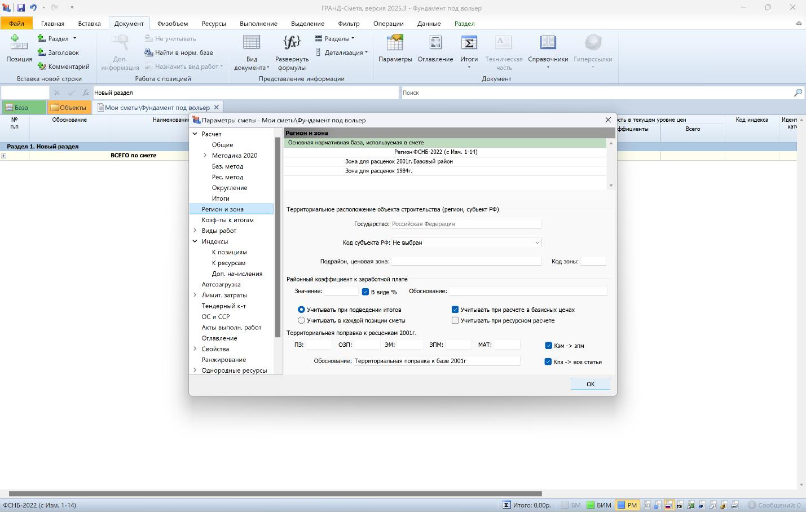
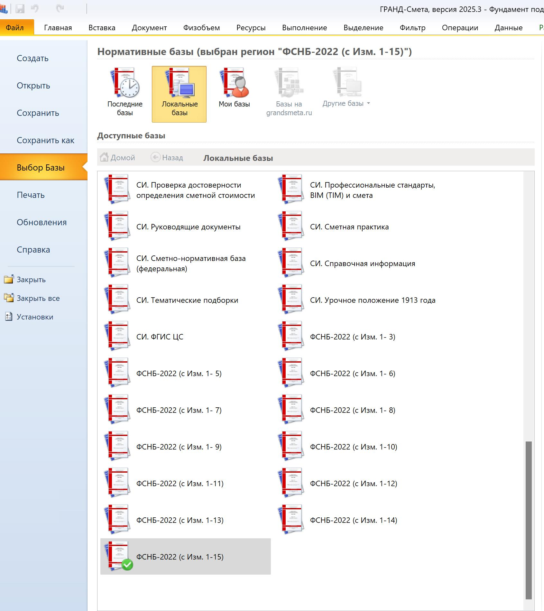
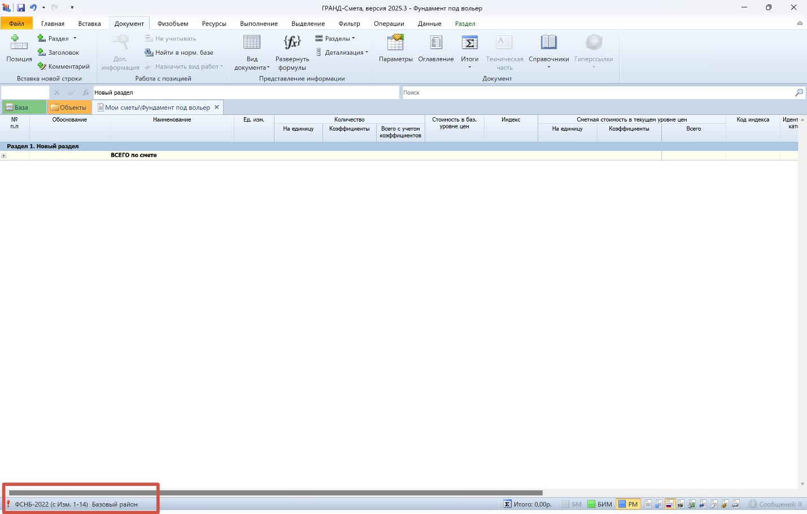
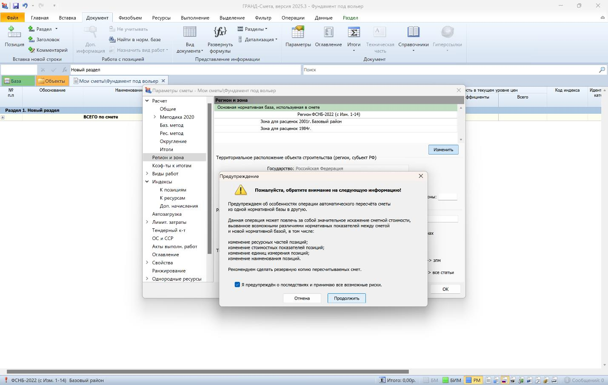
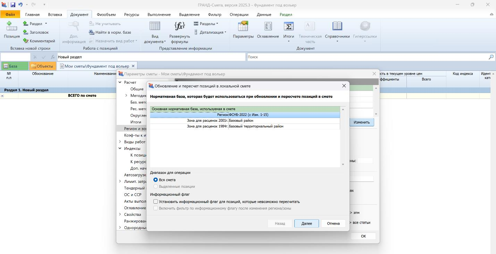
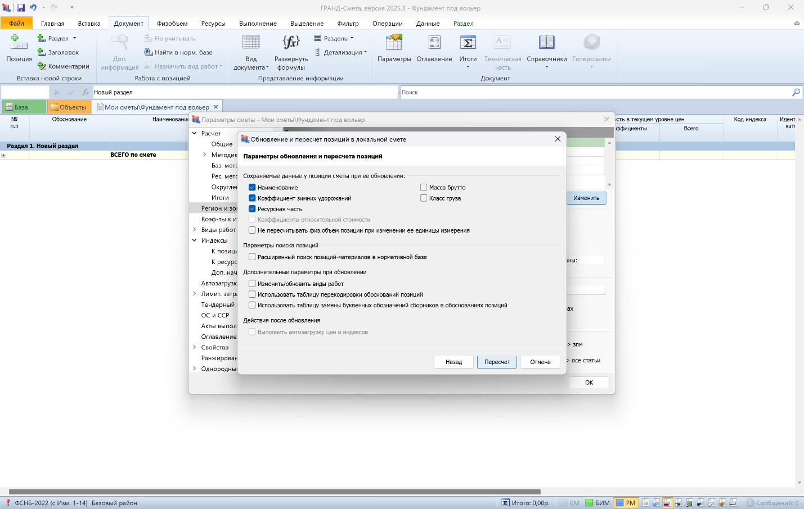
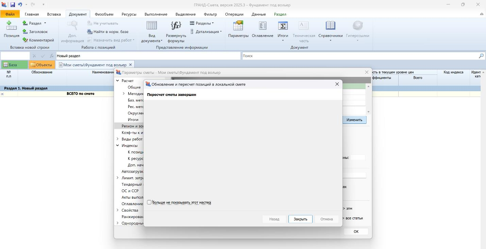
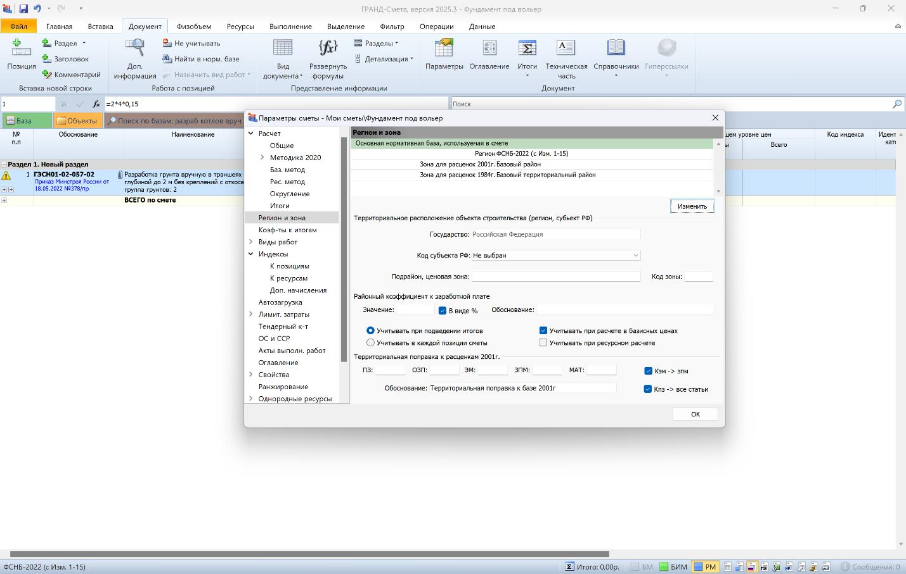

Понятие региона и зоны

Как и обещала ранее, на этом уроке мы будем менять регион и зону.
Вкладка Параметры – «Регион и зона»:

В этом прмиере установлена база ФСНБ-2022 (с Изм. 1-14), что соответствует ценовым показателям 2 квартала 2025 года, 3 квартал, соответственно будет ФСНБ-2022 (с Изм. 1-15), сейчас мы ее и поменяем:
Переходим на вкладку Файл, далее Выбор Базы, и из перечня выбираем ту, что нам необходима, в нашем случае ФСНБ-2022 (с Изм. 1-15).

Переходим на вкладку Документ и видим, что внизу документа ругань, на несоответствие открытой ФСНБ:

Приводим все в соответствие: Параметры – Регион и зона – Изменить. Ставим галочку что ознакомлены, нажимаем продолжить:

Отображается открытая база, в которую нужно перевести смету. Затем нажимаем далее:

Выбираем необходимые параметры, которые необходимо сохранить при пересчете нормативной базы, нажимаем Пересчет:

Вот и все, Регион и зону поменяли, нажимаем Закрыть.

Конфликт исчерпан, далее будем загружать текущие цены.
